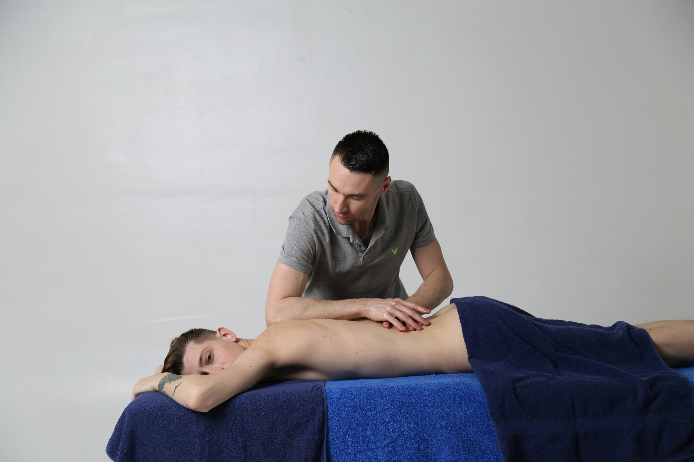
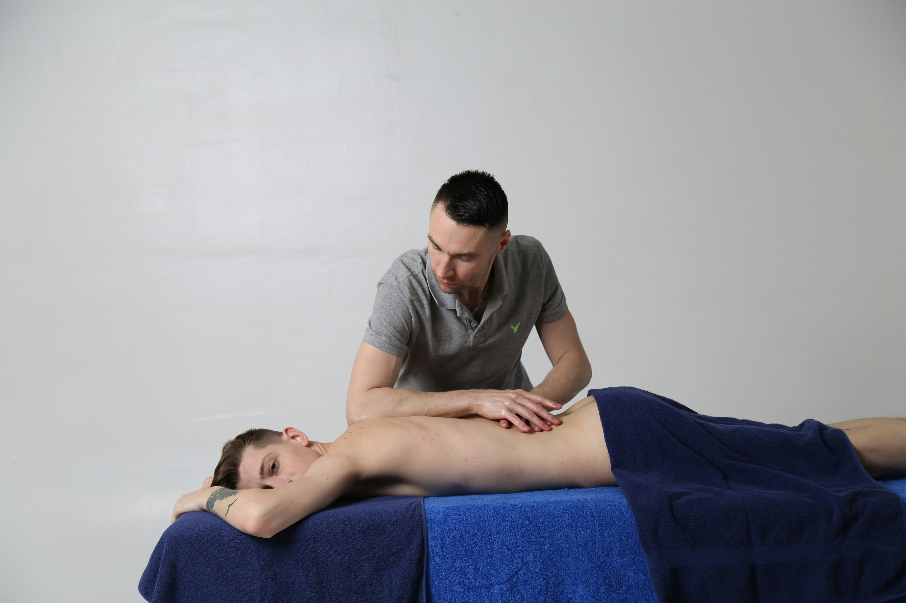
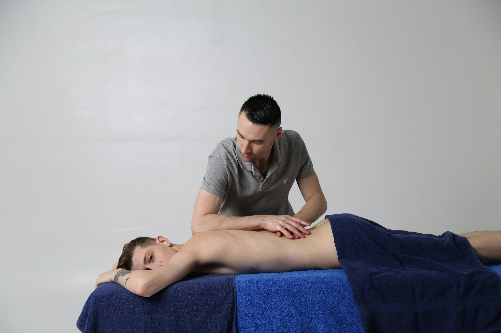

I miei servizi
Trattamenti specializzati e personalizzati per ogni esigenza riabilitativa. Scopri nel dettaglio tutte le terapie che offro per il tuo benessere.
 

Trattamenti specializzati e personalizzati per ogni esigenza riabilitativa. Scopri nel dettaglio tutte le terapie che offro per il tuo benessere.

Tecniche e Metodologie
Mobilizzazione Articolare
Tecniche di mobilizzazione passiva e attiva per ripristinare il movimento articolare. Utilizzo del metodo Maitland per un approccio graduale e sicuro, adattato alle esigenze specifiche di ogni paziente.
Manipolazioni Vertebrali
Tecniche di manipolazione ad alta velocità e bassa ampiezza (HVLA) per il trattamento delle disfunzioni articolari vertebrali. Approccio sicuro e controllato per il ripristino della funzionalità.
Terapia Miofasciale
Trattamento delle tensioni e restrizioni del sistema fasciale attraverso tecniche manuali specifiche. Include rilascio miofasciale, stretching fasciale e tecniche di decompressione.
Neurodinamica
Valutazione e trattamento del sistema nervoso periferico attraverso test specifici e mobilizzazioni neurali per risolvere problematiche di intrappolamento nervoso.
Tecniche e Metodologie
Riabilitazione Post-Chirurgica
Protocolli specifici per il recupero dopo interventi ortopedici. Gestione delle diverse fasi riabilitative dal post-operatorio immediato al ritorno alle attività quotidiane e sportive.
Recupero da Traumi
Trattamento conservativo di lesioni muscolo-scheletriche acute e croniche. Programmi individualizzati per fratture, distorsioni, lussazioni e lesioni legamentose.
Rieducazione Funzionale
Esercizi specifici per il recupero della forza, coordinazione ed equilibrio. Utilizzo di attrezzature specializzate per un approccio progressivo e sicuro.
Terapia del Dolore
Approccio multimodale per la gestione del dolore cronico attraverso tecniche manuali, esercizio terapeutico e educazione del paziente.
Tecniche e Metodologie
Prevenzione Infortuni
Programmi di screening funzionale e correzione degli squilibri muscolari. Analisi del movimento specifico per sport e implementazione di protocolli preventivi personalizzati.
Trattamento Infortuni Acuti
Gestione immediata delle lesioni sportive secondo protocolli evidence-based. Approccio RICE modificato e tecniche di facilitazione della guarigione tessutale.
Return to Sport
Protocolli specifici per il ritorno sicuro alla pratica sportiva. Test funzionali, progressione graduale dei carichi e valutazione biomeccanica del gesto atletico.
Performance Enhancement
Ottimizzazione delle prestazioni attraverso il miglioramento della mobilità, stabilità e controllo motorio specifico per ogni disciplina sportiva.
Tecniche e Metodologie
Laser Terapia (LLLT)
Utilizzo del laser a bassa intensità per stimolare i processi riparativi cellulari. Efficace per riduzione del dolore, infiammazione e accelerazione della guarigione tessutale.
Ultrasuoni Terapeutici
Terapia con ultrasuoni per effetti termici e meccanici sui tessuti. Trattamento di tendinopatie, contratture e aderenze cicatriziali con parametri personalizzati.
Elettrostimolazione
TENS per controllo del dolore, FES per rieducazione muscolare e correnti interferenziali per trattamento profondo. Programmi specifici per ogni tipologia di disfunzione.
Tecarterapia
Diatermia a radiofrequenza per il trattamento profondo dei tessuti. Effetti biostimolanti, antinfiammatori e di aumento del metabolismo cellulare.
Tecniche e Metodologie
Valutazione Posturale
Analisi completa della postura statica e dinamica attraverso osservazione clinica e strumenti di valutazione. Identificazione degli squilibri e delle compensazioni.
Rieducazione Posturale Globale (RPG)
Metodo che agisce sulle catene muscolari per il riequilibrio posturale. Approccio globale che considera il corpo come sistema integrato di catene miofasciali.
Ergonomia e Educazione
Consigli per la correzione delle posture lavorative e delle attività quotidiane. Educazione posturale per prevenire recidive e mantenere i risultati ottenuti.
Esercizi Correttivi
Programmi di esercizi specifici per il rinforzo dei muscoli stabilizzatori e l'allungamento delle catene retratte. Progressione graduale e personalizzata.
Tecniche e Metodologie
Prevenzione Cadute
Programmi specifici per migliorare equilibrio, coordinazione e reattività. Valutazione del rischio cadute e implementazione di strategie preventive personalizzate.
Mantenimento Mobilità
Esercizi per preservare e migliorare la mobilità articolare e la flessibilità. Approccio graduale e sicuro adattato alle capacità individuali.
Rinforzo Funzionale
Programmi di rinforzo muscolare orientati alle attività della vita quotidiana. Focus su forza, resistenza e coordinazione per mantenere l'autonomia.
Gestione Patologie Croniche
Approccio multidisciplinare per la gestione di artrite, osteoporosi, problematiche cardiovascolari e neurologiche tipiche dell'età avanzata.
Prenota una valutazione gratuita e insieme troveremo il percorso riabilitativo più adatto alle tue esigenze
© 2025 Dr. Mauro Bianchi - Fisioterapista. Tutti i diritti riservati.